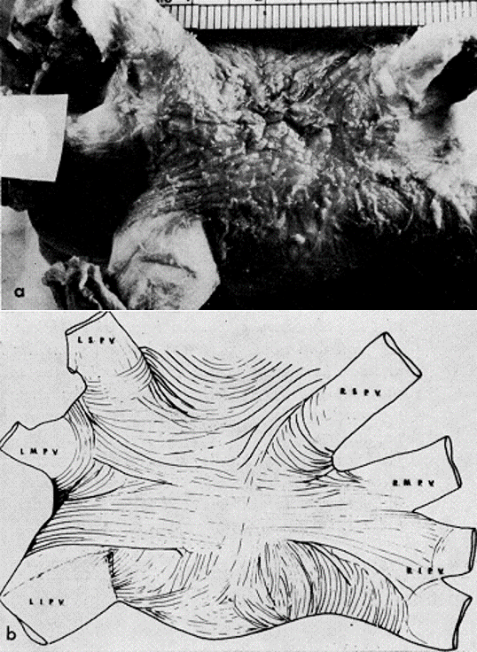

Focal source, mostly from pulmonary veins, can initiate AF.
Mechanisms include trigger and localized reentry.
This focal source is more involved in driving AF in paroxysmal > persistent types.
Haïssaguerre, M. NEJM 1998;339:659-66, Nathan, H. Circulation 1966;34;412-422, and 2016 ESC Guidelines for the management of atrial fibrillation.